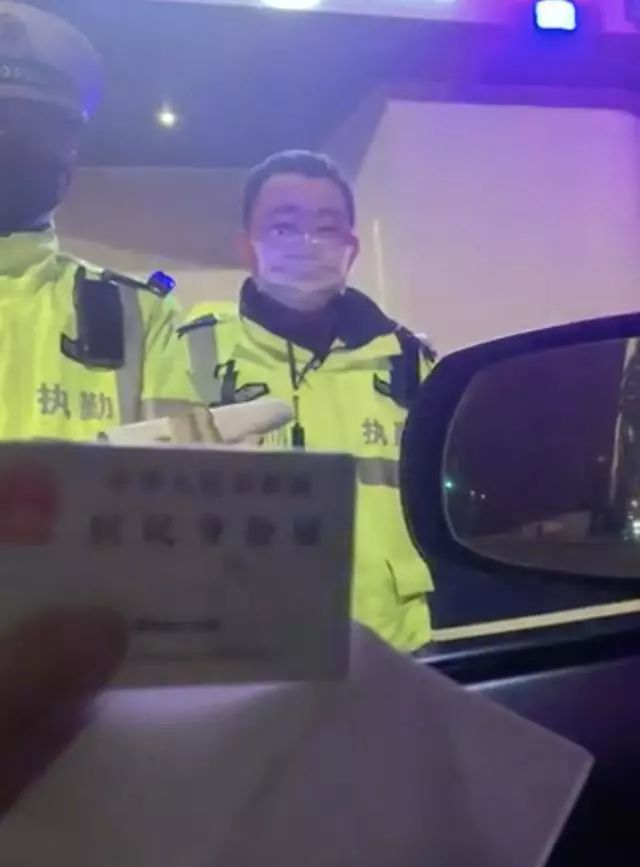

现实版囧途：流浪15天直奔温州，终于下高速，但是……
原文链接 备份链接 昨晚我一夜没睡，今天早上就出发了，我想回大温州。 但是开了一整天，晚上六点了，我还在乐清北高速口吃旺旺雪饼。 这就是我的元宵节晚饭了。 加上今天，我已经在车上住了15天，啃方便面啃到口腔溃疡。 ▲我在江西三清山服务区 …

这个春节有点囧
口述/陈老板
**（温州一餐厅负责人）**
在车上睡了15个晚上，昨晚11点多，我终于洗上了热水澡，躺在了温州永嘉县隔离点的床上。
感谢永嘉县委！真舒服啊。
▲现在胡子拉碴的我
01
又疲又乏的我，总算在永嘉落下了脚
昨晚7点13分，在辗转两个出入口被拒后，我来到温州东，顺利下高速。
我想导航去我的餐厅，导航让我掉头上温州东高速。气得我啊。
导航上显示到处都是叉叉，到处都封路，什么玩意儿啊，我干脆关了导航。
毕竟也在温州生活15年，我凭记忆开到瓯越大桥。
刚准备上桥，一个工作人员就把我拦住了。
我说，我上饶过来的，这是身份证和健康证明。
他盯着我看了几秒钟，挥挥手说：“下去，下去吧。”
我赶紧开走了。
哪里知道过了大桥，没开几分钟，又遇上卡口。
检查登记好，几个交警说，你这种情况必须返回。

我说我实在走不了了，温州才是我的家，我现在又累又乏，心跳加速。
交警听完我的讲述，打了一通电话，让我先坐一会儿。他给我泡了一碗方便面，另外一位交警给我拿了橘子。
他们还说，要是我早点过来，还能跟他们一起吃饭，现在太晚了就只有泡面了。
我把车靠边停下，在车里等。在车上漂太久了，如果再让我回去，我真的会崩溃，身体也实在是吃不消了。
交警一直在打电话，还三次走过来查看我的情况。交警安慰我：“你别急，我们在想办法，县委很关注你这个事，争取让你今晚就回乐清。”
在路上漂了这么久，听到这样的话真的蛮感动的。
我等了一个多小时。今天开了一整天车了，这是我最后一根救命稻草。
他们最后又走过来，一个交警说：“县里考虑到你这种精神状态和身体状况，再回去的话怕出事。所以特批你今晚就在永嘉隔离，不过还是要收取一定费用的。”
感谢领导们，你们心肠太好了！
02
洗了澡，我还想刮胡子
晚上11点多，警车开道带着我来到了永嘉的隔离点，是幢三四层的小楼，听说是以前的人武部。
门口医生已经在等着我了，登记好资料量好体温，他们带着我到了住处，还发给我一个体温计，让每天测好报群里。
“后面14天就住这里吧，有需要就群里说。”
屋子大概十几平方米，有电视和空调，设施稍微老旧了点，跟我餐厅所在的酒店肯定不能比。我把东西一放好，第一件事就是去洗澡。
有热水真好啊。
我还想找个刮胡刀，十几天没刮胡子，太邋遢了。
▲以前刮过胡子的我
今天早上8点我就起来了，电话一直不断。
我想测个体温，刚拿出来，一个电话，挂了之后体温计就不知道哪里去了。刚找到准备再量，电话又来了。
都10点多了，我体温还没报上去，他们要催我了。
早饭是直接挂门口的。一个包子、一个面包、一个鸡蛋、一杯豆浆，挺好。
吃住都解决了。
03
生意损失惨重，疫情过后再战
接下来14天我要考虑三件事情，一个是我回温州会不会被传染，命毕竟是最重要的，我身体弱啊。我该怎么样更好保护自己？
一个是14天后怎么办？朋友们说，乐清封了，14天后我可能也回不去。
一个是我的生意怎么办？现在还有七八个员工被隔离着，餐厅也关了，根本没法开工。生意做不成，他们的饭我肯定还是要给他们吃的，每天都要支出。

▲以前的我
实话不瞒你，这次过年我没回安徽老家或者四川我老婆那里，也是因为今年做生意亏了，没脸回家，才去朋友那边散散心。
我是个自尊心很强的人啊，总想着要衣锦还乡。
现在因为肺炎这个事，生意就更没法做了。
20年前，我当过纺织厂工人，也踩过三轮车，因为身体差，都干不长。
后来亲戚介绍我去餐馆打工，我聪明又肯干，15天就当上了班长，2个月不到就学会了养海鲜。
亲戚说，温州是个大城市，我这么聪明的人应该去大城市发展，我就从安徽来了温州。我去五六家餐馆当海鲜池的学徒，学本事。
▲我给自己举了手
后来就发现，已经没什么可学了，我给自己举了手，说：“出师了！”
后来就有人来挖我了，XX大酒店的总经理专门用车请了我三次，我终于去了。
我开始搞承包，承包餐厅的海鲜池和后厨，从一家店发展到二十家店，最火的时候，我一个月可以赚十几万。
钱在袋里还没捂热，又遇上经济不好，我的店从十几家慢慢缩到几家。
这几年由于种种原因，现在我只剩三家店了，欠了一点债务。
两个月前，我跟几个朋友又花一百多万投资了家餐厅，现在血本无归，准备的新鲜澳洲大龙虾都只能放进冷库，而且根本没人要买了。
不过我也没有太悲观。在这个行业，我还是专业的，专业的人要想翻身，只要努力了就不会太难。我会好起来的。
谢谢你们关心。

记录平凡而普通
的人生


你“在看”我吗？点一下让我知道

原文链接 备份链接 昨晚我一夜没睡，今天早上就出发了，我想回大温州。 但是开了一整天，晚上六点了，我还在乐清北高速口吃旺旺雪饼。 这就是我的元宵节晚饭了。 加上今天，我已经在车上住了15天，啃方便面啃到口腔溃疡。 ▲我在江西三清山服务区 …
原文链接 备份链接 “ 我妈见我脸色不对，接过电话一听，她也慌了，只知道对那边重复道：”她还只是个孩子，她什么都不知道。” —全民故事计划的第436个故事 — 一 2020年2月5号，我被隔离的第五天。 如果接下来 …
原文链接 备份链接 *************▲*************2020年1月31日，温州某商业街，店铺都关闭了。（南方周末记者 王华震/图） 全文共*3424*字，阅读大约需要8分钟。 截至2月4日12点，温州确诊新冠肺炎 …
原文链接 备份链接 文 | 三明治016 车子缓缓驶近村口。 一根彩带揉搓成的细长绳子，挂在门口两个石狮子上，挡住了进村的路。 因为新型冠状病毒影响，正月初七这天，往年返京最高峰的日子，北京多个村庄、多个社区却相继曝出拒绝租客进门的规 …
原文链接 备份链接 文/麓泉 编辑/大风 从1月23日算起，武汉宣布封城已经大概过去了半个月的时间。 一时间，湖北乃至其中的任何一个城市，都成了闻之色变的词语，与湖北有关的人成了全国各地区无差别“歧视”的对象。 封城后的武汉，图源于微博林 …